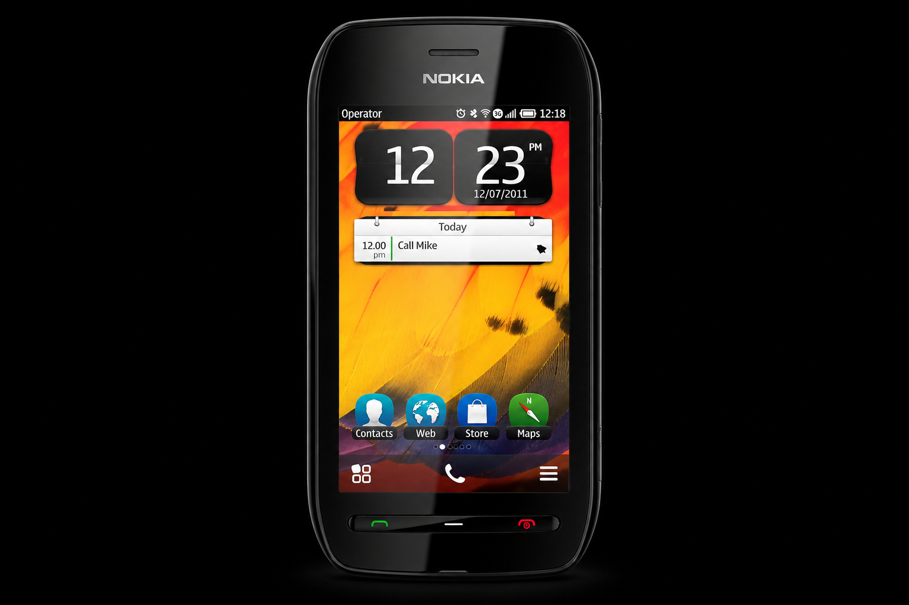
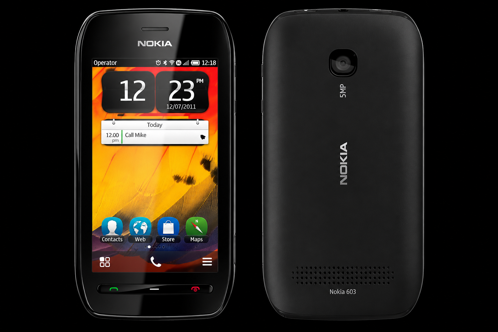

CLEARBLACK
Яркий экран.
Ясные впечатления.
3,5 дюйма, 640 × 360 пикселей и сенсорное управление. Технология ClearBlack улучшает читаемость при ярком свете.
NOKIA 603 · THE ORIGINAL
Есть вещи, которые не забываются.

Тот самый Nokia. В новом свете.
ДИЗАЙН, КОТОРЫЙ ПОМНИШЬ
Плавные линии. Удобный хват. Настоящие кнопки. Nokia 603 легко помещается в ладони — и остаётся в памяти.

Всё под рукой. Три физические клавиши для звонков и меню. Привычные действия одним нажатием.
Твой цвет. Твой характер. Чёрная или белая передняя панель и сменные задние крышки оригинальной серии.
ВЫХОДИ ЗА РАМКИ ПРИВЫЧНОГО
CLEARBLACK
3,5 дюйма, 640 × 360 пикселей и сенсорное управление. Технология ClearBlack улучшает читаемость при ярком свете.
КАМЕРА
Камера 5 Мп с Full Focus и видео 720p при 30 кадрах в секунду. У этой картинки свой характер.
До шести домашних экранов, виджеты и многозадачность. Интерфейс, который можно сделать своим.
1 ГГц процессорNFC для обмена данными и сопряжения с совместимыми аксессуарами. Bluetooth 3.0 и Wi-Fi для остального.
NFC встроенСъёмный аккумулятор BP-3L. Зарядка через microUSB. Простые вещи, которые приятно иметь.
1300 мА·чМЕНЬШЕ ШУМА. БОЛЬШЕ ТВОЕГО.
Музыкальный плеер, FM-радио и разъём 3,5 мм. Подключи любимые наушники и оставь лишнее за кадром.
БЕЗ ЛИШНИХ СЛОВ
Оригинальная модель 2011 года.
Те самые характеристики.
3,5″ ClearBlack TFT · 640 × 360
Ёмкостный сенсорный экран
Symbian Belle
ARM11, 1 ГГц · 512 МБ RAM
5 Мп · Full Focus · f/2.4
Видео 1280 × 720, 30 кадр/с
2 ГБ встроенной памяти
microSD до 32 ГБ
NFC · Bluetooth 3.0 · Wi-Fi b/g/n
microUSB · USB OTG · 3,5 мм
BP-3L, 1300 мА·ч
Съёмный, зарядка по USB
GSM / EDGE · WCDMA / HSDPA
Micro-SIM · 2G / 3G
113,5 × 57,1 × 12,7 мм
Компактный корпус
По данным оригинального анонса Nokia и архивной спецификации Nokia Developer. Версия ПО и комплект зависят от конкретного экземпляра.
ХОРОШИЕ ВЕЩИ ВОЗВРАЩАЮТСЯ
СВОЙ ЭКЗЕМПЛЯР — СВОЯ ИСТОРИЯ
Попроси реальные фото корпуса и экрана. Уточни работу кнопок, камеры, разъёмов и отсутствие блокировки оператора.
Состояние батареи важнее обещаний о времени работы. Узнай, есть ли аккумулятор BP-3L, зарядка и задняя крышка.
Nokia 603 работает в 2G и 3G. Перед покупкой проверь поддержку этих сетей своим оператором.
Это оригинальная Nokia 603, представленная в 2011 году. На вторичном рынке встречаются бывшие в использовании, восстановленные и иногда неиспользованные экземпляры. Состояние каждого устройства нужно уточнять у продавца.
В телефоне используется Symbian Belle. Приложения для Android и iOS установить нельзя. Работу конкретных старых приложений и интернет-сервисов нужно проверять отдельно: многие из них больше не поддерживают Symbian. Для музыки, коллекции и знакомства с классической Nokia это часть её характера.
Нет. Модель поддерживает GSM/EDGE и WCDMA/HSDPA — сети 2G и 3G. Их доступность зависит от страны и оператора. Уточни совместимость до покупки.
Это камера с расширенной глубиной резкости, без автофокуса. Оригинальная спецификация указывает диапазон фокусировки от 50 см до бесконечности. Для близких макроснимков лучше выбрать другой инструмент.
Покупка оформляется на выбранной площадке у конкретного продавца. Там же указываются стоимость, доставка, комплект и условия возврата. Этот сайт помогает познакомиться с моделью и найти предложения; собственный склад и приём платежей здесь не заявлены.
CONNECTING PEOPLE. СНОВА.